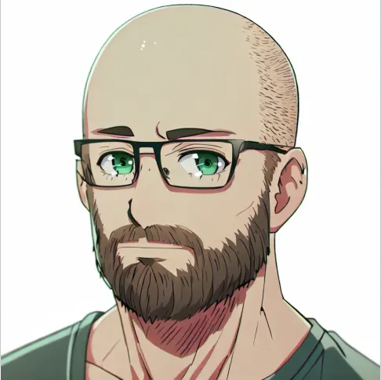
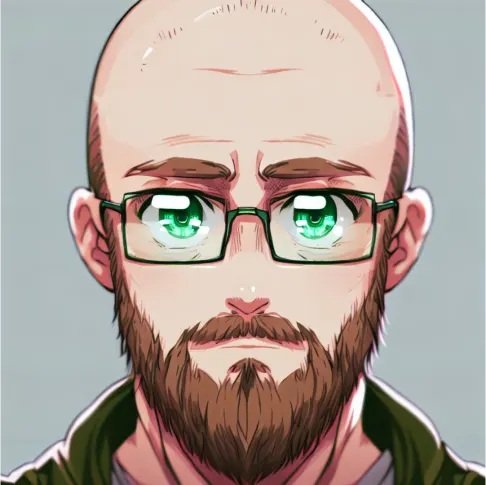
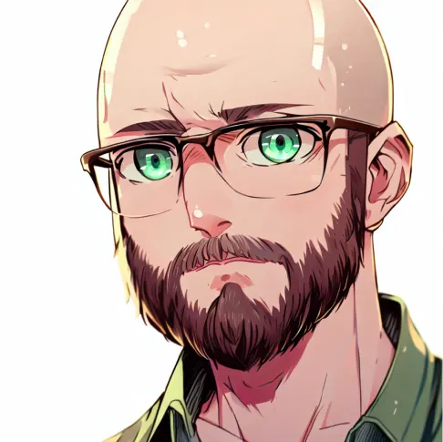

<app-contain class="textContain">
    <div class="aboutUsContain">

        <div class="aboutUsText">
            <h1>À Propos de MysthiCity : <br>
                Épanouissez Votre Passion pour le Fantastique</h1>
            

            <p> Bienvenue chez MysthiCity, votre porte d'entrée vers un univers numérique où le fantastique devient
                réalité. Fondée par 4onel, un passionné de RPG et d'art fantastique, notre plateforme NFT fusionne des
                mondes légendaires avec une esthétique moderne, créant un espace où les mythes prennent vie sous forme
                de créations numériques uniques.</p>

            
            <p> En tant que fervent amateur de jeux de rôle
                et de créatures mythiques, 4onel a conçu MysthiCity comme une célébration de ces passions. Inspiré par
                les univers de fantasy, notre fondateur a souhaité créer un espace où les artistes et les
                collectionneurs peuvent se réunir pour explorer des
                histoires intemporelles à travers une lentille contemporaine.</p>

            
            <p> Rejoignez-nous dans cette aventure où les frontières entre l'imaginaire et la réalité s'estompent, où
                les créatures mythiques prennent vie grâce à la technologie NFT. Explorez nos collections, découvrez des
                créatures adaptées et non-adaptées,
                et plongez dans un monde où votre passion pour le
                fantastique trouve une nouvelle expression numérique.</p>

            <p> Bienvenue chez MysthiCity, où votre amour pour les RPG et le merveilleux s'entrelace avec les
                possibilités infinies de l'art numérique.</p>
        </div>
    </div>
</app-contain>